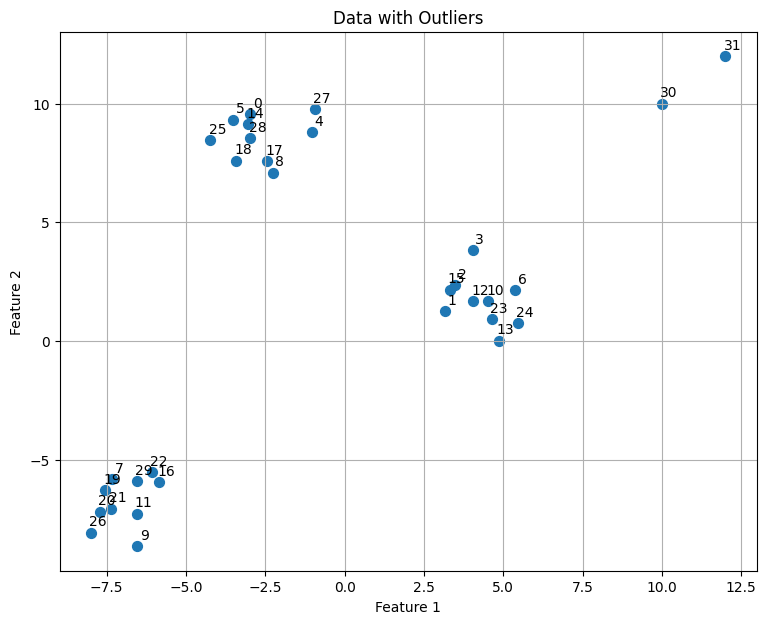
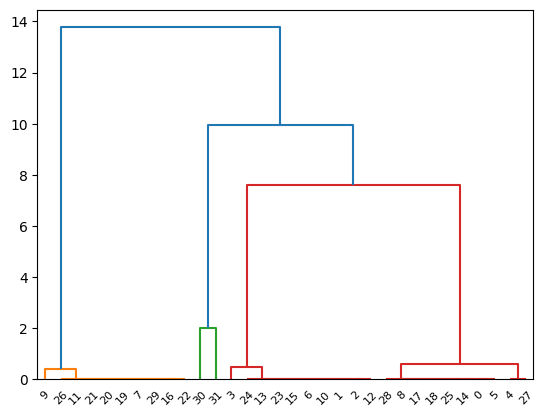
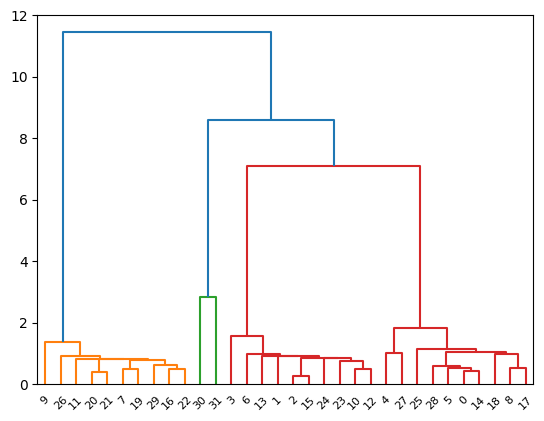

Project \( \epsilon \) -insensitive Linkage#
This projects start with Mr. Saeedi in 1403 in PR course Contact: Telegram :@amirahs2000
This project is worth 2 points out of 20
Complete with details and corrections in native English. Additionally, include any necessary innovations for improvement.
import numpy as np
import matplotlib.pyplot as plt
from sklearn.datasets import make_blobs
from scipy.cluster.hierarchy import linkage, dendrogram
from scipy.spatial.distance import pdist
# define custom epsilon-insensitive distance metric function
def epsilon_insensitive_distance(u, v, epsilon):
return np.maximum(0, np.abs(u - v) - epsilon)
# Generate synthetic data with outliers
X, _ = make_blobs(n_samples=30, centers=3, cluster_std=1.0, random_state=42)
outliers = np.array([[10, 10], [12, 12]])
X = np.vstack([X, outliers])
# define epsilon value
epsilon = 1
# plot the data
plt.figure(figsize=(9, 7))
plt.scatter(X[:, 0], X[:, 1], s=50)
# annotate each datapoint with its index
for i, (x, y) in enumerate(X):
plt.annotate(i, (x, y), textcoords='offset points', xytext=(5, 5), ha='center')
plt.title('Data with Outliers')
plt.xlabel('Feature 1')
plt.ylabel('Feature 2')
plt.grid(True)
plt.show()

# calculate pairwise distance using the custom epsilon-insensitive distance metric
custom_distance = pdist(X, lambda u, v: epsilon_insensitive_distance(u, v, epsilon).sum())
# perform hierarchical clustering using the custom distance metric
custom_linkage = linkage(custom_distance, method='single')
# plot dendrogram
dendrogram(custom_linkage)
# show plot
plt.show()

# use square form loss function
euclidean_distance = pdist(X, lambda u, v: np.sqrt(((u-v)**2).sum()))
# perform hierarchical clustering using the euclidean distance metric
common_linkage = linkage(euclidean_distance, method='single')
# plot dendrogram
dendrogram(common_linkage)
# show plot
plt.show()
